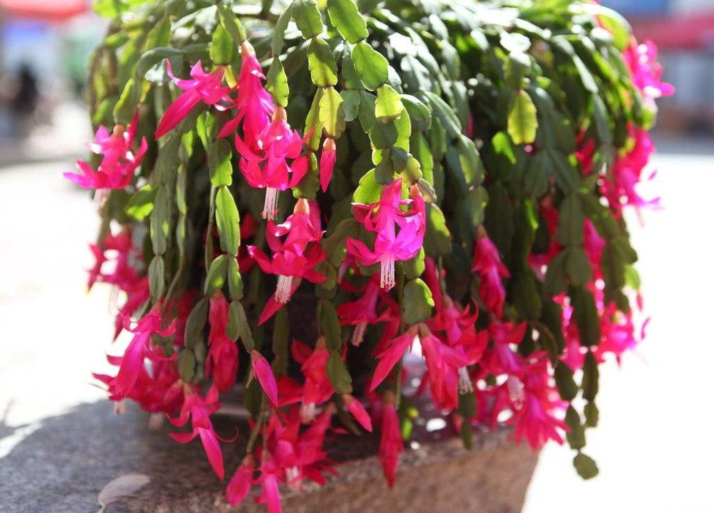
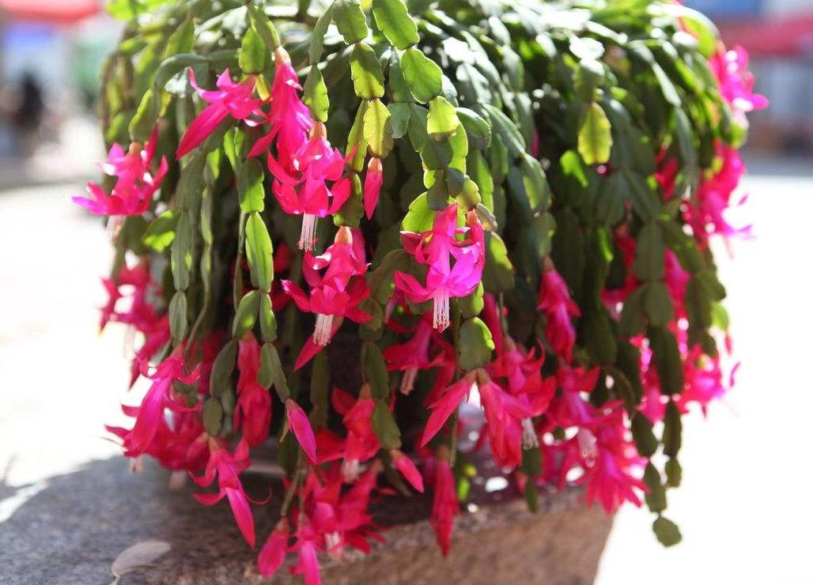

Common Name: Christmas cactus, 蟹爪兰
Botanical Name: Schlumbergera
 

Other references
RHS
Gardeners' World
Christmas cacti (Schlumbergera) flower over the Christmas period, from late November to January – hence their name. They make good Christmas gifts – their bright, trumpet-shaped flowers in shades of red, white, pink, purple and even yellow bring a welcome splash of colour to any room. Their flat, segmented and trailing stems look attractive all year round.
Re-pot once a year (or at least every two years) to maintain healthy growth. This can be done at the end of March, which is the beginning of their growing season. Use a standard cactus compost or a loam based compost such as John Innes No 2 with added leafmould (or peat substitute) and grit to help improve the drainage. When potting on, choose only a slightly larger container as they like to be snug in a small pot.
You’ll find Christmas cactus plants in garden centres or supermarkets during the holiday period, but for the widest range of varieties, its best to buy from specialist retailers online.
Schlumbergera are forest cacti – in the wild, they grow in tropical rainforests, where they grow attached to trees. This means that need different growing conditions to desert cacti. They need to be kept away from bright sunlight and like plenty of humidity.
Christmas cacti will flower every year given the right treatment – the main thing to remember is that they need two periods of rest (in a cool room, with less watering): one after flowering and another in autumn. The plants can last for years and are often handed down through generations.
Grow your Christmas cactus in a warm, bright spot out of direct sunshine, and mist a few times a week. In order to flower every year, Schlumbergera need two periods of ‘rest’ – lower temperatures and less watering – after flowering in late winter and again in September.